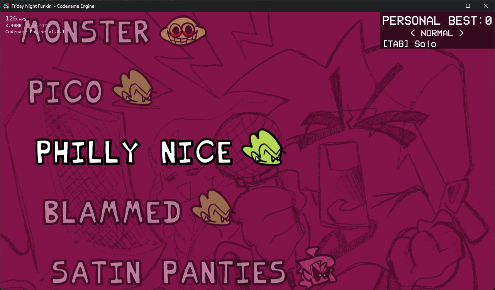

Do I need to compile the engine?
No! It is reccomended to use the engine as is, as the engine comes with modding tools out of the box.The only reason you should think about compiling the engine is to make Feature Requests, fix bugs, and / or add features for your mod that Modding Tools can't provide (So you can add them yourself).
Otherwise you can just use the ./mods/ folder to make your mod!
How to navigate the engine
The engine is basically similar to what you'd expect, but here are the immediate differences you will see.
Options Menu


Here you can see what the default menu looks like, and is formatted like a Tree Menu with branching options in categories, and sub-states for more customizability.
Controls Menu

TODO: Put a link here to learn more about how your mod can make custom Options with the XML, same for custom Controls.
Developer Options

To start using Modding Tools, and shortcuts (seen in the Keybind Menu) you need to enable the Developer Mode option in the Miscellaneous Tab. This will allow you to use keybinds to Refresh the current state, open up some Debug Menus, and reload your Global Script(s).
Mod Select Menu

This menu is accessed by pressing TAB (by default) in the MainMenuState. Selecting "Disable Mods" will use just load the default AssetLibrary's (i.e the ./assets/ folder).
If you want a mod to Automatically load when launching the game, you can place a autoload.txt in your ./mods/ folder and inside it, just put the folder name of the mod you want to load (no file extensions if you're attempting to possibly load a Compressed Mod)
As of right now, Compressed Mods hasn't been properly implemented, there is a PR that implements it and is planned on being merged in the near future.
FPS Counter

You can toggle the FPS Counter into 3 different states by pressing F3. (Currently you cannot change the keybind for this)
These are all the states you can cycle through:
- Disabled
- FPS, RAM Usage / Allocated RAM, Build Version
- Advanced Details
You can see A lot of useful information about what state the game is in, what is currently happening, and all your loaded AssetLibrary's.
Freeplay State
The FreeplayState is hasn't changed much, besides the Gamemode Types you can cycle and add onto yourself.
TODO: Add a link to explain How to add custom Gamemode Types.
Gamemode Types
- Solo
- Opponent Mode
- Co-Op Mode
- Co-Op Mode (Switched)
Co-Op Mode will use your Player 1 Keys for Dad, and Player 2 Keys for Boyfriend. The Switched Variant swaps them.